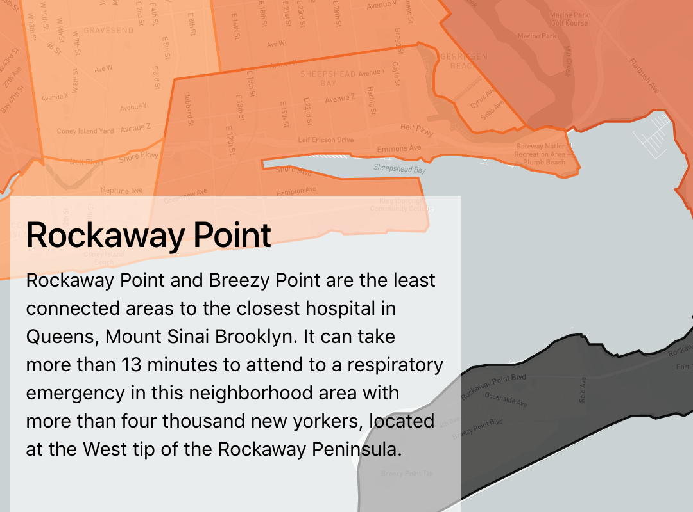
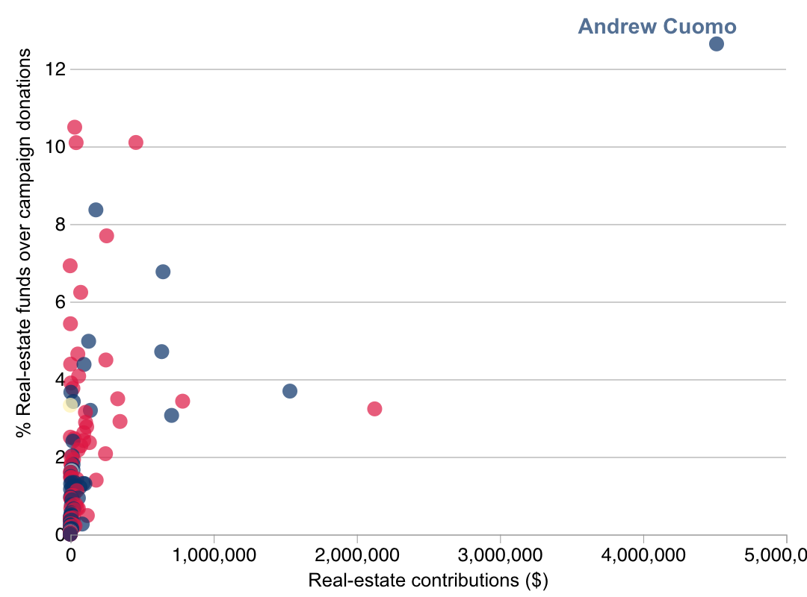
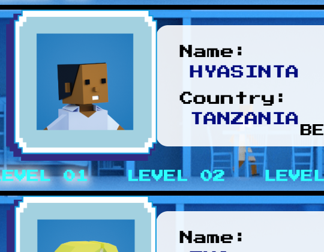
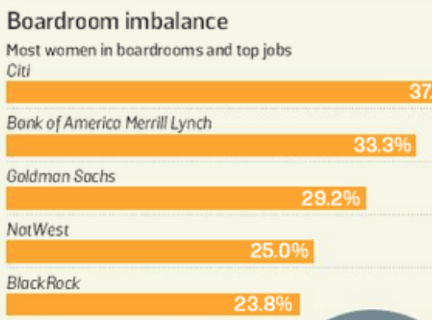
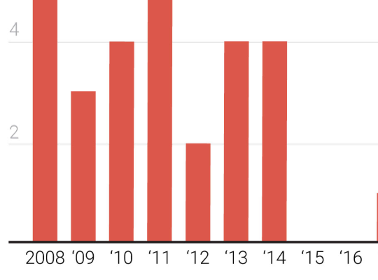

👔 LinkedIn - - - 😼 Github - - - 🐦 Twitter
About me
I am an MS student in Data Journalism at Columbia Journalism School. I am focused on data visualization, news automation and investigative journalism. I am a former data journalist at Spanish newspaper El Confidencial and intern at The Times of London and Agencia EFE.
Stories

EMS response times
🏷️ Python, Leaflet
This scrolly-telling project tracks and analyzes the average EMS response times to different kinds of emergencies in New York City. It tries to identify the barriers and black holes to ambulance response in the urban area of the five boroughs of the city. I gathered the data from NYC Open Data API and analyzed it and visualized it with Python. After that, I worked in the reporting side of the story and produced the visuals using Adobe Illustrator and ai2html script, as well as, Leaflet Javascript library to develop the interactive maps.

Gubernatorial campaign contributions
🏷️ Python, D3.js
This project shows the weight of real estate companies in campaign contributions for midterm governor candidates. It analyzes the campaign contributions that the 2018 Gubernatorial candidates of each state received. It categorizes by type of company behind the contribution and compares the amount of money from real estate with the total amount they raised for their 2018 election campaign. I pulled the data from Follow the money API, creating an script that distinguish between categories of contributors. The analysis of the data, run with Python, compares the contributions of real estate companies to the candidates with the whole amount they received to fund their campaigns. The visualizations have been developed with D3.js library.

Coding like a girl
🏷️ Python, APIs
Funded by Bill & Melinda Gates Foundation, this data-driven project shows the current gender gap in the Information & Technology workforce. Simulating an arcade game, it showcases successful career paths and projects around the world and scrutinizes their impact on local development. Also, Coding like a girl tries to identify and tackle the problems that female programmers have to face and find solutions to close the gender gap in computer science.
Smog, the bot
🏷️ Python, RiveScript, HTML, CSS, Javascript
Smog analyzes hourly the levels of pollutants in different areas of New York City and sends an alert with the main insights of the analysis when it detects an outlier, indicating there might be a story behind it. Smog has two souls. He is an e-mail bot and a twitter bot.

Big banks give less than 10% of top jobs to women
🏷️ Spreadsheet, Illustrator
Eight big banks and financial institutions, including Scottish Widows, Rothschild and Barclays, each have less than 10% of their top posts filled by women.

From natural disaster to terrorism, a decade of OJA awards
🏷️ Pyhton, Illustrator
Ten years ago, six stories related to natural disasters were finalists for the 2008 OJAs, the most in the category. But in recent years, mass shootings and terrorism have gained more traction. This year while Hurricane Florence unleashes its fury in the Carolinas, there are two stories about natural disasters and three about mass shootings.